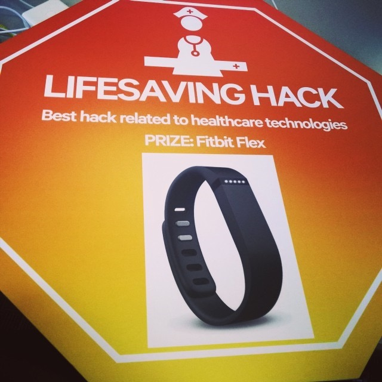

I love collecting and analyzing how all my personal data (including fitness, nutrition, sleep,
location history, and more) interact with one another. To that end, my personal goal is to improve
everyone’s daily lives by combining all their data and helping them make sense of it. To pursue this
goal further, I am studying Computer Science (with a focus on Machine Learning) in the Master
of Engineering program at UC Berkeley.
Over Summer 2019, I interned at an early-stage startup as a Machine Learning Intern and worked on
developing classification models using computer vision techniques in TensorFlow 2. I used transfer
learning on many models including InceptionV3 and ResNet-152. Along the way, I scraped for images
and created a video annotation tool using opencv2. I also generated 40k randomized simulated
images for training after learning to use Blender.
The MEng program focuses extensively on technical leadership in the industry and so, I am taking
courses about Machine Learning, Deep RL, and ML Systems. In Fall 2019, I am researching traffic
light coordination using Deep RL.
In 2017, I published an iOS app called Drinks Tracker on the App Store based on an observation that
I made a couple of years ago during my undergraduate years at The Ohio State University. In early
2018, I was working on integrating drink suggestions using machine learning in my app (to
automatically suggest drinks to users based on their preferences and drink history) when Apple
removed this category of apps from the App Store.
My current fitness goal is to complete a 7.5 mile run in an hour. Currently, I am two minutes away
from making it!
In my spare time, I enjoy watching movies and TV, especially science fiction classics such as Star
Trek and Doctor Who. 🖖
After I graduate in December 2019, I want to work as a Machine Learning Engineer, ideally in the Bay
Area, to make better use of all the data that we generate every day.
Currently researching traffic light coordination using Deep Reinforcement Learning
with Prof. Alexandre Bayen
August 2019 – present
Researched how to reduce mixed-autonomy traffic congestion using Deep Reinforcement Learning
with my Capstone team and Prof. Alexandre Bayen
2018 – 2019
Optimized the behavior of autonomous vehicles to improve a city-scale scenario
Worked in a team to use and improve an open-source traffic control framework called Flow that
works with SUMO (traffic simulation software) and RLlib (reinforcement learning Library)
App uses an algorithm to notify the user about their estimated Blood Alcohol Content (BAC) level
Created a custom algorithm that calculates the user’s BAC level based on multiple metrics
Installed by 3.9k+ users with 104k+ impressions
Completed the Machine Learning by Stanford course
Taught by Andrew Ng, Co-founder, Coursera and Adjunct Professor, Stanford University
Spring 2017
Used Beautiful Soup 4 and scikit-learn to implement several clustering and classification algorithms
such as DBSCAN, Hierarchical Clustering, Naïve-Bayesian, and K-Nearest Neighbors
Calculated Jaccard Similarity scores and Mean Squared Error to accurately create association rules
Analyzed speech during video calls to automatically create meetings in Google Calendar
Worked with the IBM BlueMix, Google Cloud Speech, and Google Calendar APIs

Won Best Lifesaving Hack at Qualcomm’s intern hackathon for an Augmented
Reality app
Summer 2015, Qualcomm
Created an Android app to visualize sound to assist the hearing impaired
Machine Learning Engineering Intern
LookDeep Health
Summer 2019, Oakland, CA
Trained classification models using computer vision techniques with transfer learning on InceptionV3
and ResNet-152
Achieved an AUC of 0.87 and an accuracy of 84% despite only having 2.5k real-world training
images
Built my model’s training pipeline in TensorFlow 2 and learned to use DVC, an open-source model
versioning system
Assisted another intern in developing the end-to-end system from reading images off the camera
to
serving predictions using TensorFlow Serving and displaying the output inference in the browser
Scraped images to use for modeling and created a video annotation tool using opencv2 to convert
relevant YouTube videos’ frames to training images.
Used and contributed to a popular open-source annotation tool called Scalabel (developed at UC
Berkeley)
Generated 40k randomized simulated images for training after learning to use Blender
Wrote Java code for 7 webapps used by 15k+ administrators for library management (books, media, etc.)
Updated legacy webapps to use jQuery, connect to a PostgreSQL database, and deploy with Apache
Tomcat
Enhanced OAuth authentication services used by OCLC’s enterprise partners to offer better
support for
mobile apps
Supported a $3M+ contract by writing utilities to easily internationalize a webapp in 20+
languages
Optimized database handling and functionality for compliance with GDPR requirements
Built and deployed our webapps to several QA and Production environments
Improved my internal webapp from 2014 and created new features to automate tasks for other team
members
Used C# to internalize SQL scripts into an ASP.NET application while collaborating using Team
Foundation Server
Overhauled an internal webapp used to manage a consumer-facing website
Resolved and implemented requested user stories to increase operational productivity
Made extensive use of ASP.NET, SQL, HTML5, and JavaScript while collaborating with other team
members using Team Foundation Server in Visual Studio
Assisted Computer Science professors, faculty, and students with their technical queries and issues
Replied to any queries sent to help@cse.ohio-state.edu diligently and in a timely manner
Printed posters for graduate students
Ensured that all the CSE printers (~20) are working at all times with no paper and ink issues
Gained experience programming in work environment
Primarily programmed in ASP.NET and C#
Created websites for inputting and recalling user details
Worked in Microsoft Access to create databases to store user details